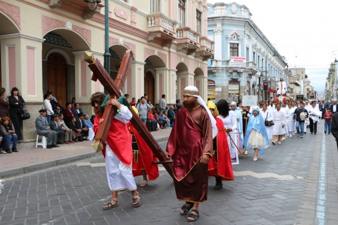
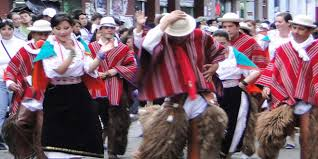
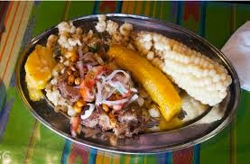
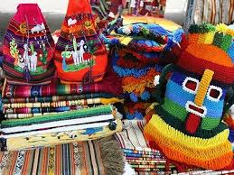
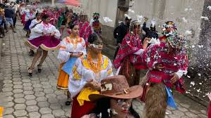

| HOME | GALERÍA | SITUACIÓN GEOGRÁFICA | COSTUMBRES | SITIOS TURÍSTICOS |
Riobamba tiene una rica tradición cultural influenciada por su historia andina y mestiza. Entre sus costumbres más destacadas están:
En Riobamba, las celebraciones como la Fiesta de la Virgen de la Merced y el Carnaval son momentos importantes que mezclan tradiciones indígenas y católicas, reflejando la fusión cultural de la región.

Debido al clima frío de montaña, la gente usa prendas de lana de oveja o alpaca, como ponchos, sombreros y polleras, que además representan la identidad cultural andina.

Los platos típicos como el cuy asado, los llapingachos y el locro de papa son parte fundamental de la cultura local, aprovechando los productos que se cultivan en la región.

Los tejidos y tallados en madera reflejan la herencia indígena, mostrando el talento y la historia de los habitantes de Riobamba.

Ritmos como la bomba y la marimba acompañan las festividades, manteniendo vivas las tradiciones ancestrales.
